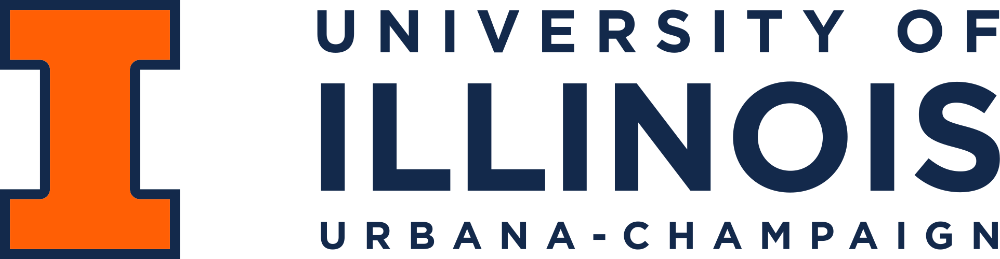
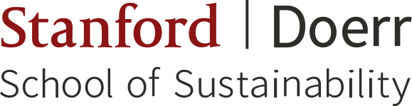

"The best way ~ to predict the future ~ is to create it"
My Roles
-
Strategy Consultant
Senior Associate Consultant at McKinsey & Company, Silicon Valley; previously three years in Türkiye and Azerbaijan
-
Engineer & Inventor
Mechanical and industrial engineer, co-inventor on a U.S. patent, published on 3D-printed diagnostics and geologic hydrogen
-
Entrepreneur
Former CFO of Hydrify, a Stanford geologic-hydrogen venture; climate venture-capital fellow in Berlin and Palo Alto
-
Educator
Award-winning teaching assistant for sustainability and ecopreneurship courses at Stanford
Yalcin Aydin
Senior Associate Consultant, McKinsey & Company · Stanford MBA & MS · Bay Area
I am a Senior Associate Consultant at McKinsey & Company's Silicon Valley office and a graduate of Stanford's joint degree program, where I earned an MBA from the Graduate School of Business and an MS in Environment and Resources (E-IPER) from the Doerr School of Sustainability
I started out as an engineer. I graduated from Koç University as salutatorian with degrees in mechanical and industrial engineering. At the University of Illinois I was a product manager and research assistant in Prof. William P. King's lab, where I led the development of 3D-printed portable COVID-19 test kits. That work became a U.S. patent and papers in PNAS and Analytical Chemistry
I then spent three years with McKinsey in Türkiye and Azerbaijan, where I co-designed Türkiye's first 30-year decarbonization roadmap and helped solar, wind, and oil and gas clients improve their operations
At Stanford I went deep on the energy transition, especially geologic hydrogen. I co-authored a techno-economic analysis of natural and stimulated hydrogen, wrote my capstone on the economics of natural hydrogen in California, and served as CFO of Hydrify, a Stanford startup using AI to locate hydrogen-rich rock formations and produce low-carbon hydrogen at $1/kg. Along the way I worked in climate venture capital in Berlin and Palo Alto, helped redefine Stanford's zero-waste goals as a Sustainability Fellow, and co-led the GSB Business & Climate Club
My Current Work
Engineer by training, strategist by trade, builder at heart
I'm back at McKinsey, now in the heart of Silicon Valley, bringing a rare mix to every client: an engineer who took a COVID-19 test from lab prototype to U.S. patent, a consultant who co-designed a national net-zero roadmap, and an operator who has seen climate ventures from both sides of the table, as a startup CFO and as a venture-capital fellow
I am dedicated to continuing to work at the intersection of technology, strategy and sustainability to create the "future"
Experience
-
2026 – present

Senior Associate Consultant McKinsey & Company
Silicon Valley (Bay Area) office -
2023 – 2025
Chief Financial Officer Hydrify
Stanford, CA- Geologic-hydrogen venture developing an AI algorithm to locate hydrogen-rich rock formations, targeting low-carbon hydrogen at $1/kg
- Team named a TomKat Center Innovation Transfer grantee
-
2024 – 2025
Sustainability Fellow (Living Lab) Stanford University
Office of Sustainability- Helped redefine Stanford's zero-waste and zero-carbon goals through waste characterization studies, board-level interviews and stakeholder workshops
- Modelled how Stanford's waste stream will evolve over the next 15 years, including the impact of eliminating single-use disposables, as featured in Stanford Report
- Work grounded in monthly dumpster audits: Stanford diverts 68% of its waste against a 90%+ goal, yet nearly 75% of landfill-bound waste could have been reused, recycled or composted, and food makes up over 40% of it (Julie Muir, Stanford Daily)
-
Summer 2025
Venture Capital Investing Fellow Gigascale Capital
Palo Alto, CA- Developed an investment thesis on metal fuels and metal-air batteries through in-depth customer interviews, technology benchmarking and techno-economic analyses (TEAs) of commercialization potential
- Supported early-stage climate-tech investments with competitive landscape mapping, market sizing and technology assessments
-
Summer 2024
Venture Capital Intern SBI Ventures Europe
Berlin, Germany- Built financial models and funding materials to support capital-raising and investment strategy
-
2020 – 2023
Associate Consultant McKinsey & Company
Türkiye & Azerbaijan- Co-designed Türkiye's first 30-year decarbonization roadmap to reach net zero in a cost-optimal and equitable way, working with government, trade unions and industry associations across 50 subsectors and 160+ technologies
- Developed and ranked 600+ emission-reduction use cases across 75 sectors
-
2018 – 2020

Product Manager & Research Assistant University of Illinois
Nanoengineering Laboratory (Prof. William P. King)- Led the development, delivery and testing of 20+ prototypes of a portable COVID-19 test kit in three months, with university researchers, medical staff, and state and federal leaders
- Co-inventor on U.S. Patent 11,938,480 for a 3D-flow microfluidic diagnostic device
-
2017 – 2018
Project Manager Koç University & Siemens
Collaboration project · Türkiye- Measured and mapped the carbon footprints of a Siemens factory and the university campus for the first time
- Developed six sustainability projects, from renewable energy to circular economy, to cut campus emissions and waste
-
2017
Business Analyst Intern PwC Strategy&
Türkiye- Analyzed the impact of global and local free trade agreements (FTAs) on the Turkish automotive industry and global sales
-
2016
Strategist Intern Atölye Labs
Design thinking and innovation consultancy · Türkiye- Helped design and launch imece, Türkiye's largest social-entrepreneurship incubation program, which supported 43 social startups with 1,000+ hours of mentorship and invested in 10 of them
- Managed the first cohort of social-impact startups focused on affordable clean technologies and inclusive, quality education
- Facilitated design thinking workshops on sustainability, social responsibility and education
Education
Master of Business Administration (MBA)
Certificate in Public Management and Social Innovation
Miller Social Change Leadership Award

Master of Science in Environment and Resources (E-IPER), Sustainable Energy Systems
Capstone: Demand and Supply Mapping and Economics of Natural Hydrogen in California
Centennial Teaching Assistant Award
Master of Science in Mechanical Engineering
GPA 4.00 / 4.00 · Gauthier Distinguished Honor (100%) Fellowship · DARPA research sponsorship
Thesis: Microfluidic diagnostics from continuous liquid interface production additive manufacturing (advisor: Prof. William P. King)
Bachelor of Science in Mechanical Engineering & Bachelor of Science in Industrial Engineering (double major)
Salutatorian among 1,100+ graduates · GPA 4.00 / 4.00 · 100% High Honor Scholarship
Exchange programs:
- UC Berkeley, Mechanical Engineering (2015)
- Technical University of Munich, School of Management (2017)
Patents & Publications
470+ citations across three peer-reviewed papers · Citation counts from OpenAlex, November 2026
- Microfluidic diagnostic device with a three-dimensional (3D) flow architecture
- Techno-economic analysis of natural and stimulated geological hydrogen
- Portable pathogen diagnostics using microfluidic cartridges made from continuous liquid interface production additive manufacturing
- Rapid isothermal amplification and portable detection system for SARS-CoV-2
- Microfluidic diagnostics from continuous liquid interface production additive manufacturing
- Who is Smarter? Topology Optimization of Heat Sinks
Leadership & Community
-
2024 – 2025
Co-president GSB Business & Climate Club
Stanford Graduate School of BusinessOrganized events such as the GSB Climate Conference and built career pathways into climate tech for members
-
2022
Moderator, "Technological Singularity" Global Relations Forum
Young Fellows program · Galatasaray University -
2016 – 2018
Founder & Director Tunnel X Makerspace
Koç UniversityLed a team of 10 to launch Türkiye's first student-run laboratory for entrepreneurial projects
-
2013 – present
Member & former Student Regional Chair of Europe ASME
American Society of Mechanical EngineersOrganized international competitions, conferences and networking events for engineering students
Recognition
Featured in
Awards & honors
-
2026
Centennial Teaching Assistant AwardStanford Doerr School of Sustainability
-
2025
Miller Social Change Leadership AwardStanford Graduate School of Business
-
2025
TomKat Innovation Transfer GrantHydrify team, Stanford TomKat Center
-
2020
U.S. Patent 11,938,480Co-inventor, University of Illinois
-
2018
Gauthier Distinguished Honor FellowshipUniversity of Illinois Urbana-Champaign
-
2018
Hult Prize Regional FinalistSocial entrepreneurship competition
-
2018
Salutatorian, among 1,100+ graduatesKoç University
-
2017
University Innovation FellowStanford d.school program in design thinking
-
2017
Global Finalist, 3M Invent a New Challenge3M innovation competition
Beyond Work
Languages
English (full professional) · German (working) · Turkish (native)
Tools
Excel · Python · Power BI · MATLAB · COMSOL · Siemens NX · Autodesk Fusion
Interests
Design thinking · 3D printing & maker projects · Aikido · Worm composting · Home automation
I'm a maker and smart-home enthusiast, with over 200 connected devices tackling everyday challenges, like curtains that open when we wake up and lights that remind us to take our vitamins
Let's connect
Reach out on LinkedIn if you're into clean tech or sustainability transformation, or just want to geek out about the singularity, 3D printing, smart homes or, my favorite topic, geologic hydrogen